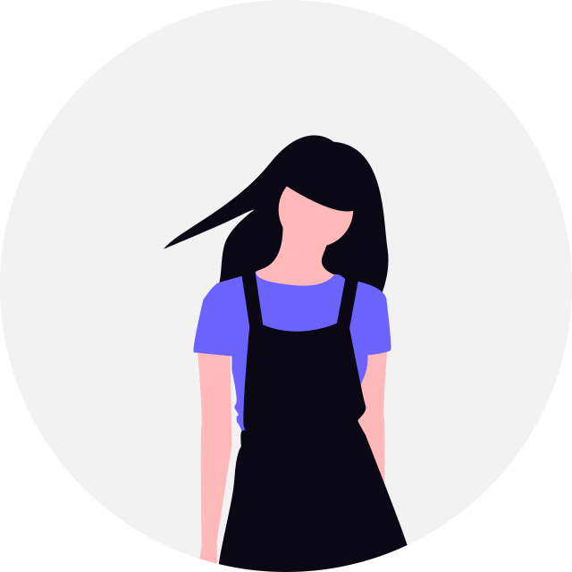
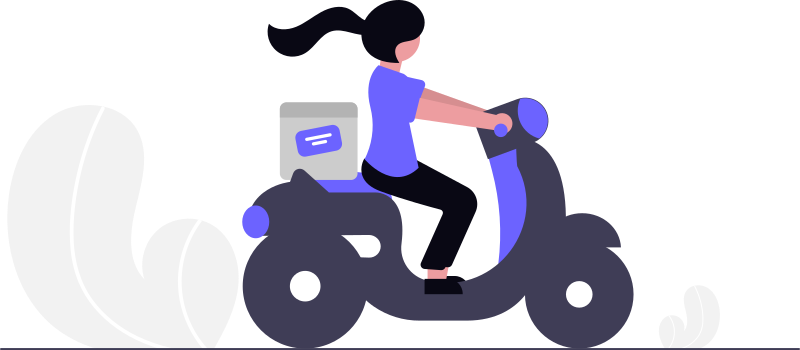
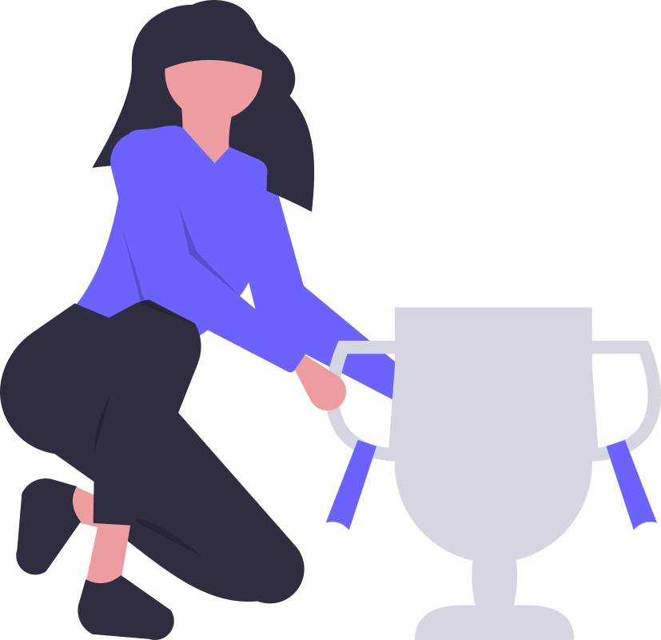

I'm Hafsa Arshad, a Frontend Engineer. I transitioned into web development through self-directed learning and hands-on practice alongside my academic journey. Throughout this journey, I completed several valuable courses that strengthened my web development and technical skills. You can explore my certifications and learning journey in the Certifications section.

I completed my BS in Statistics, where I developed strong analytical and problem-solving skills. Alongside my university studies, I became interested in web development and started learning it independently through courses, practice, and hands-on projects. Coming from a non-CS background, this journey allowed me to step into technology through a different path and combine my analytical thinking with creativity, logical problem-solving, and frontend development.
My journey into web development began alongside my BS in Statistics. I started by learning the fundamentals of HTML, CSS, and JavaScript through self-directed learning and practical projects. As I gained confidence, I explored modern frontend technologies such as Bootstrap, Tailwind CSS, and React. Each project and learning experience has helped me strengthen my skills and understand how to turn ideas into functional and responsive web experiences.


My goal is to continue growing as a Frontend Engineer by building responsive, user-friendly, and meaningful web experiences. I want to keep improving my technical skills, explore modern web and AI technologies, and work on real-world projects that allow me to solve problems creatively and create value through technology.